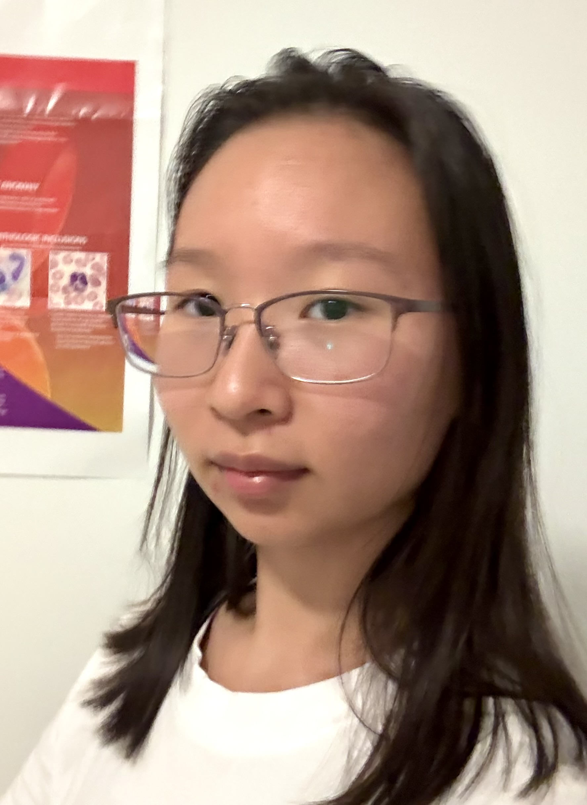

About Me
I am a second year student at Queen’s University. I am part of the Faculty of Arts and Sciences, studying Life Science. I’m interested in biochemistry and the possibilty of extraterrestrial life. I also like to play badminton, make origami, and watch medical cases.

My Courses for the Fall Semester
- CHEM 281 — The basics and fundamentals of organic chemistry.
- ANAT 215 — The principles of human anatomical structure and function.
- PHGY 215 — Exploration of specialized cells, and tissues; how they function.
- MICR 271 — Introduction to microbes and their biology.
- CISC 121 — Interchangeable use of language and code, and implementation of algorithms to solve problems.
Contact Methods
Email: hu.j@queensu.ca
LinkedIn: linkedin.com/in/julie-hu2567890